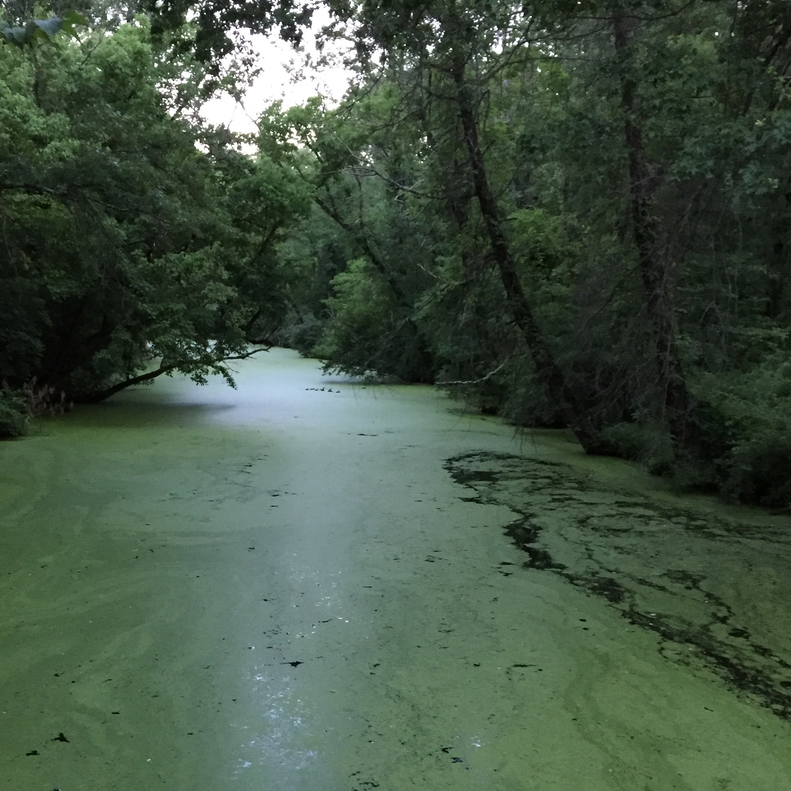

Listened to: Hello Internet
The Nike app apparently hates my armband. I on the other hand really like it, so I'll have to figure something out. It didn't track my run properly, so this map is only a part of my run. This place was great! Jack Hudson told me about it the other day and I went exploring for a while and finally found it. My run involved going through clouds of bugs and passing swampy rivers, but it was all really cool. Good time to switch systems, since tomorrow's a new month. 
Home Prev